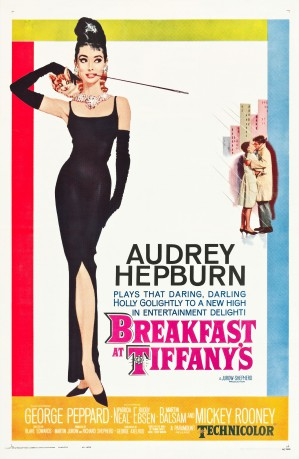
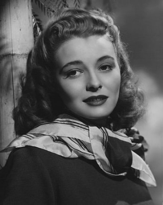
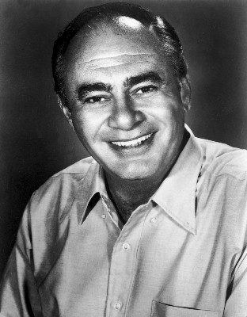
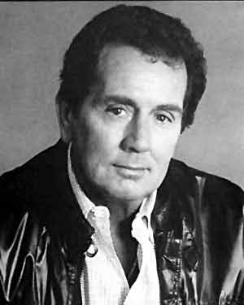
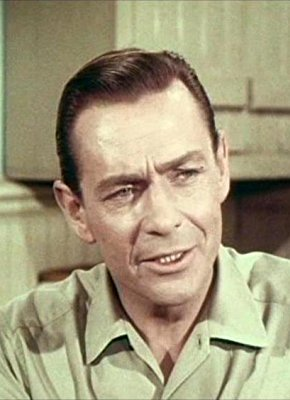
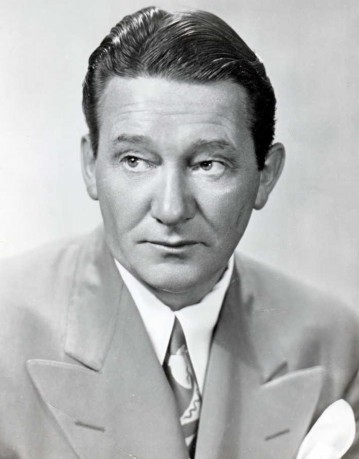

#8749 Frühstück bei Tiffany
Alternativ: Breakfast at Tiffany's
Auszeichnungen: 2 Oscars gewonnen für 3 Oscars nominiert
 
 IMDB-Wertung: 7.7 / 10
IMDB-Wertung: 7.7 / 10  Metascore: 0
Metascore: 0 
Holly Golightly is a flighty Manhattan party girl, who expects "money for the powder room as well as for cab fare" for her companionship. She has even gotten a lucrative once weekly job to visit notorious convict Sally Tomato in Sing Sing, she needing to report back to Sally's lawyer the weather report that Sally tells her as proof of her visits with him in return for payment. Her aspirations for glamor and wealth are epitomized by the comfort she feels at Tiffany's, the famous high end jewelry retailer where she believes nothing can ever go wrong. Her resolve for this wealth is strengthened, if not changed slightly in focus, upon news from home. Into Holly's walk-up apartment building and thus her life is Paul Varjak, a writer who Holly states reminds her of her brother Fred, who she has not seen in years and who is currently enlisted in the army. The two quickly become friends in their want for something outside of their current lot. Paul's situation is closer to Holly's than he ...
Jahr: 1961
Dauer: 115 Minuten
FSK: 12
Land: USA Studio: A Paramount PictureTonspuren: DD2.0 - ,
Untertitel: Deutsch,
Auflösung: 1080p (1920x1080) Größe: 8140 MB
Genre: Drama, Komödie, Liebe
Regisseur: Blake Edwards
Drehbuch: Truman Capote
Soundtrack: Henry Mancini
Darsteller:
 Audrey Hepburn als Holly Golightly
Audrey Hepburn als Holly Golightly George Peppard als Paul Varjak
George Peppard als Paul Varjak-  Patricia Neal als 2E Failenson
- Buddy Ebsen als Doc Golightly
-  Martin Balsam als O.J. Berman
- José Luis de Vilallonga als José da Silva Pereira
 John McGiver als Tiffany's Salesman
John McGiver als Tiffany's Salesman Stanley Adams als Rusty Trawler
Stanley Adams als Rusty Trawler- Elvia Allman als Librarian
- Alan Reed als Sally Tomato
- Claude Stroud als Sid Arbuck
- Orangey als Cat
 Mickey Rooney als Mr. Yunioshi
Mickey Rooney als Mr. Yunioshi Henry Beckman als Narcotics Detective Cronberger (uncredited)
Henry Beckman als Narcotics Detective Cronberger (uncredited) Mel Blanc als Holly's Drunk Visitor (uncredited)
Mel Blanc als Holly's Drunk Visitor (uncredited)-  Roydon Clark als Party Guest (uncredited)
 Marian Collier als Party Guest (uncredited)
Marian Collier als Party Guest (uncredited)- Tommy Farrell als Party Guest (uncredited)
 Joe Gray als Party Guest (uncredited)
Joe Gray als Party Guest (uncredited)- Kip King als Delivery Boy (uncredited)
- Gil Lamb als Gil - Party Guest with Harriet (uncredited)
- Frank Marth als Party Guest (uncredited)
- Fay McKenzie als Party Guest Laughing in Mirror (uncredited)
 Harold Miller als Jewelry Shop Customer (uncredited)
Harold Miller als Jewelry Shop Customer (uncredited)-  Robert Patten als Party Guest (uncredited)
-  Charles Sherlock als Reporter at Policed HQ (uncredited)
- Joan Staley als Blonde in Low-Cut Cream Dress (uncredited)
- Richard Wyler als Party Guest (uncredited)
- Michael Zaslow als Party Guest (uncredited)
- Dorothy Whitney als Mag Wildwood
- Beverly Powers als Nightclub Stripper
- Al Avalon als Spieler at Stripjoint (uncredited)
- Janet Banzet als Woman (uncredited)
- Henry Barnard als Party Guest (uncredited)
 Nicky Blair als Party Guest (uncredited)
Nicky Blair als Party Guest (uncredited)- Bill Bradley als Reporter (uncredited)
- Thayer Burton als Girl in Shower (uncredited)
- Florine Carlan als Party Guest (uncredited)
- Sue Casey als Party Guest in Blue and Green Dress (uncredited)
- Christine Corbin als Sing Sing Prison Visitor (uncredited)
- Dick Crockett als Cab Driver (uncredited)
- Tom Curtis als Party Guest (uncredited)
- James Field als Party Guest (uncredited)
- George Fields als Harmonica Player (uncredited)
- Joseph J. Greene als Mr. O'Shaunessy (uncredited)
- Sam Harris als Jewelry Shop Clerk (uncredited)
- Hanna Hertelendy als Party Guest (uncredited)
- Barbara Kelley als Party Guest (uncredited)
- Frank Kreig als Party Guest (uncredited)
- James Lanphier als The Cousin (uncredited)
Datei: X:\1961\Frühstück bei Tiffany (1961, FSK12, 1920x1080).mkv seit 26.04.2018
Festplatte: HD 1900-1970
 Es gibt insgesamt 22 Filme in der Gruppe '1961'
Es gibt insgesamt 22 Filme in der Gruppe '1961'